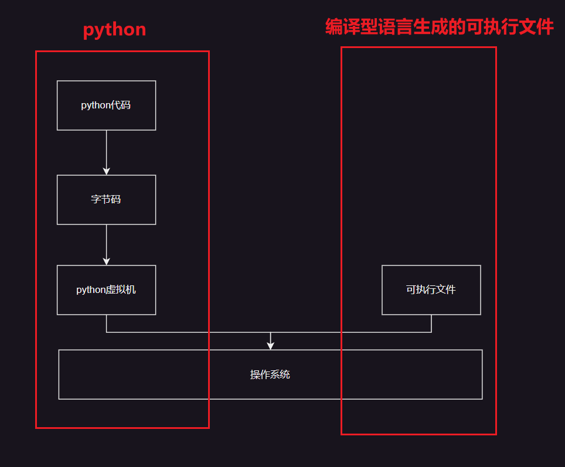
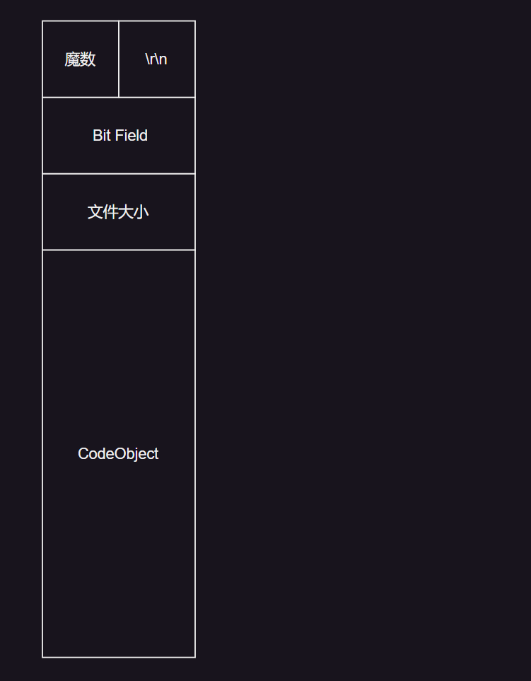

认识Python生成的文件
python虽然是解释型语言，但是在很多情况仍然需要涉及到纯文本源码以外的语言，譬如pyc，pyd……在逆向过程种，这些文件也是我们的需要逆向的部分（甚至比直接给出的py源码更重要），以下是常见的python文件类型：
py文件
py格式文件，本质是文本文件，通常指的是Python源代码文件，它包含了Python程序执行的指令和代码，在这里不多赘述。
pyc文件
pyc文件是常见的python逆向的点，pyc的逆向可以通过利用使用pycdc等工具，可以将pyc一比一的还原成python代码，所以逆向的难度主要在阅读python代码，在本教程中将不过多的针对此类文件 。
.pyc 文件是Python源代码文件（.py 文件）编译后的字节码文件。（既不是直接可执行文件也不是文本文件，字节码是一种中间表示形式，可以在Python虚拟机上执行）

当Python解释器首次导入一个模块时，它会将模块的源代码（.py 文件）编译成字节码，并将生成的字节码保存到 .pyc 文件中。执行后字节码文件通常保存在 __pycache__ 目录下，文件名格式为 module_name.cpython-xx.pyc，其中 xx 是Python版本号。那么pyc是怎么存储其中内容的呢？这幅图应该能很好的解决师傅们疑惑

pyc和所有文件一样，会有一个文件头，而pyc的文件头就如上图所示
- 魔数：是由一个 2 字节的整数，这个两个字节的整数在不同的 python 版本还不一样
- Bit Field ：这个字段的主要作用是为了将来能够实现复现编译结果，详细内容可以参考 PEP552-Deterministic pycs 。这个字段在 python2 和 python3 早期版本并没有（python3.5 还没有），在 python3 的后期版本这个字段才出现的。
- CodeObject：这里可以先等一等，我们后续会讲到
关于
.pyc文件的版本兼容性 还记得前面提到的魔数吗？文件是与Python版本相关的，不同版本的Python生成的字节码文件不兼容例如，Python 3.8生成的 .pyc 文件不能在Python 3.7环境中运行。
看到这里估计很多师傅已经想要生成一个pyc试一试了，而生成pyc的方法也很简单，我们创建一个新的文件，然后输入下面的代码执行即可。
import compileall
compileall.compile_dir('/path/to/your/python/files')
pyo文件（py3.5）之前
优化后的字节码文件：在Python 3.5及之前版本中，使用 -O 或 -OO 选项编译生成的优化字节码文件。
pyd文件（重点）
Python专属动态链接库：类似于Windows平台上的DLL文件，包含预编译的Python扩展模块。其FFI是由自己规定的一套接口，而他的生成方法也相对困难一点，首先，你需要一个打包设置的setup.py文件，在代码文件夹同级目录上
目录如下：
:.
│ setup.py
│
└─pythonProject
talker.py
setup.py文件如下：
from distutils.core import setup
from Cython.Build import cythonize
setup(
name='函数名',
ext_modules=cythonize("包含文件名"),
)
在终端中输入python setup.py build_ext --inplace，会在同级代码文件夹里生成build和pyd文件，在代码中会生成c文件。如果要生成debug文件，则在后面在加上一个--debug
生成后目录成为
:.
│ setup.py
│ talker.cp38-win_amd64.pdb #调试信息
│ talker.cp38-win_amd64.pyd #(我们需要的文件)
│ vc140.pdb # 调试信息
│
├─build
│ └─temp.win-amd64-3.8
│ └─Debug
│ └─python
│ └─ddos
│ └─pythonProject
│ talker.cp38-win_amd64.exp
│ talker.cp38-win_amd64.lib
│ talker.obj
│
└─pythonProject
talker.py
talker.c #py转化为对应的c代码
根据生成过程我们不难发现，python生成pyd的本质是先生成c代码，然后在进行编译，理解了这一点，pyd的逆向会简单不少
注意！！
1.python本身不支持生成pyd，需要我们安装Cython库
pip install Cython2.在linux上运行是自带debug信息的，这一点不用担心。但是在windows上我们需要在后边加--debug才能进行debug编译，如果出现以下报错，很可能是由于没有debug symbol和binary导致的，可以参考 附件2：python安装配置表的安装选项
C:\Program Files\Microsoft Visual Studio\2022\Community\VC\Tools\MSVC\14.38.33130\bin\HostX86\x64\link.exe /nologo /INCREMENTAL:NO /LTCG /DEBUG:FULL /DLL /MANIFEST:EMBED,ID=2 /MANIFESTUAC:NO /LIBPATH:C:\VSC\python\libs /LIBPATH:C:\VSC\python\PCbuild\amd64 "/LIBPATH:C:\Program Files\Microsoft Visual Studio\2022\Community\VC\Tools\MSVC\14.38.33130\ATLMFC\lib\x64" "/LIBPATH:C:\Program Files\Microsoft Visual Studio\2022\Community\VC\Tools\MSVC\14.38.33130\lib\x64" "/LIBPATH:C:\Program Files (x86)\Windows Kits\NETFXSDK\4.8\lib\um\x64" "/LIBPATH:C:\Program Files (x86)\Windows Kits\10\lib\10.0.22621.0\ucrt\x64" "/LIBPATH:C:\Program Files (x86)\Windows Kits\10\\lib\10.0.22621.0\\um\x64" /EXPORT:PyInit_talker build\temp.win-amd64-3.8\Debug\python\ddos\pythonProject\talker.obj /OUT:D:\python\ddos\talker.cp38-win_amd64.pyd /IMPLIB:build\temp.win-amd64-3.8\Debug\python\ddos\pythonProject\talker.cp38-win_amd64.lib LINK : fatal error LNK1104: 无法打开文件“python38_d.lib”
so文件
共享对象文件：在Unix-like系统（如Linux）上的接口，包含预编译的Python扩展模块。生成方法同pyd
egg 文件🚧
Python包分发格式：一种归档文件格式，用于分发Python包，类似于Java的JAR文件
whl文件🚧
Python Wheel文件：一种现代的Python包分发格式，比 .egg 文件更高效，支持二进制分发。